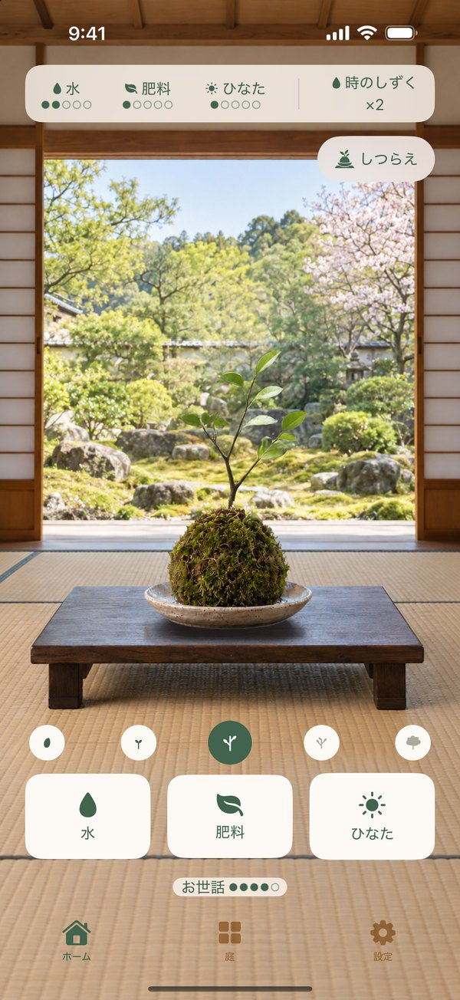
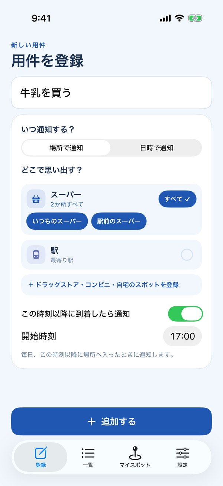
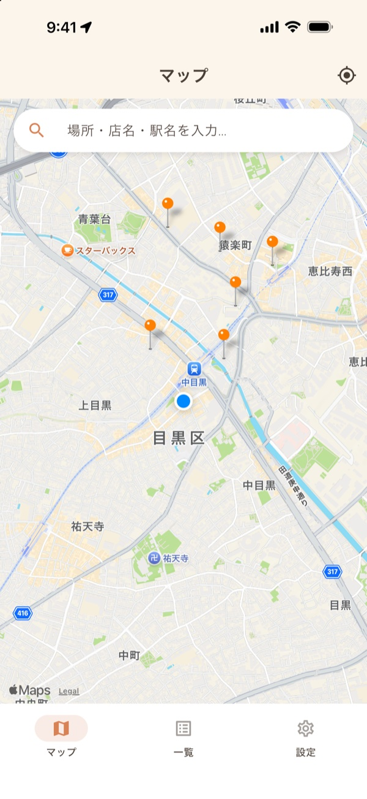
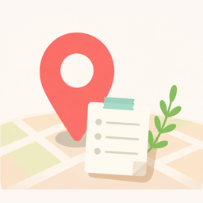
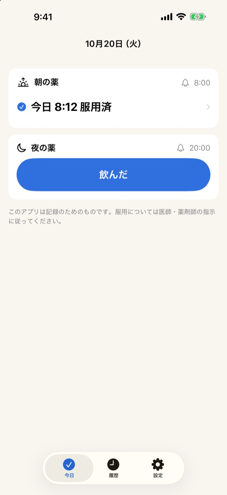

01

ゲーム ・ 無料NEW
四季苔
季節を育てる苔玉
春・夏・秋・冬の種から、水・肥料・ひなたのお世話で、3日間かけて苔玉の木を育てます。お世話しだいで、育つ木が変わります。
SAITO — INDIE iPHONE APPS
都内の会社で働く、エンジニアの端くれです。仕事のかたわら、個人で iPhone アプリを作っています。

ゲーム ・ 無料NEW
季節を育てる苔玉
春・夏・秋・冬の種から、水・肥料・ひなたのお世話で、3日間かけて苔玉の木を育てます。お世話しだいで、育つ木が変わります。

仕事効率化 ・ 無料NEW
駅や店に着いたら買い物を思い出す
よく行く店や駅、自宅を一度登録しておけば、用件を書いて場所を選ぶだけ。その場所に着いたときに、通知でお知らせします。

ライフスタイル ・ 無料NEW

すぽっとメモ行きたい場所の近くで通知
いつか行きたいお店や場所を登録しておくと、近くに来たときに通知でお知らせします。「近くにいたのに忘れてた」をなくします。

ヘルスケア／フィットネス ・ 無料NEW
飲んだ薬をワンタップで記録
朝・昼・夜に飲んだ薬を、ロック画面のウィジェットや通知からワンタップで記録します。「今日飲んだっけ？」を、iPhoneを手に取るだけで確かめられます。
ご質問・ご意見は、フォームからお気軽にどうぞ。